Optimizing tile-based light culling
Tile-based lighting techniques like Forward+ and Tiled Deferred rendering are widely used these days. With the help of such technique we can efficiently query every light affecting any surface. But a trivial implementation has many ways to improve. The biggest goal is to refine the culling results as much as possible to help reduce the shading cost. There are some clever algorithms I want to show here which are relatively easy to implement but can greatly increase performance.
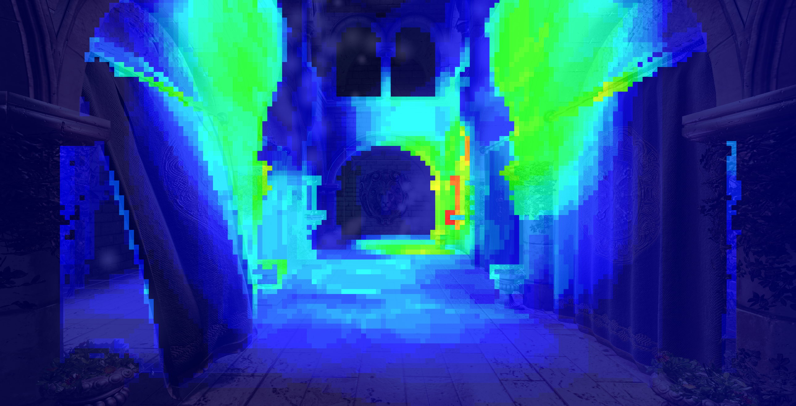
For the starting point I assume a tiled rendering pipeline like the one described in a GDC 2011 presentation by Johan Andersson (DICE). The following post will be applicable to the Tiled Deferred and Forward+ variants of that pipeline. A quick recap of such a renderer:
- Dispatch a compute shader thread group per screen-space tile
- Thread group calculates tile frustum in view space
- Each thread reads pixel from depth buffer, performs atomic min-max to determine depth bounds
- Tile frustum is truncated by depth bounds
- Each thread computes if a light is inside the frustum, adds the light to a per tile list if yes
- Compute final shading from the per tile light list
- Deferred can just read gbuffer, loop through per tile light list in the same shader and write the light buffer texture
- Forward+ exports light list that will be read by second geometry pass and compute shading in pixel shaders
Our main goal is to refine culling results with eliminating false positives, which means cull lights which do not contribute to the final shading.
1.) Help out frustum culling with AABB
The first problem arises when we perform the culling of lights as sphere-frustum intersection tests. Let me demonstrate this with a point light:
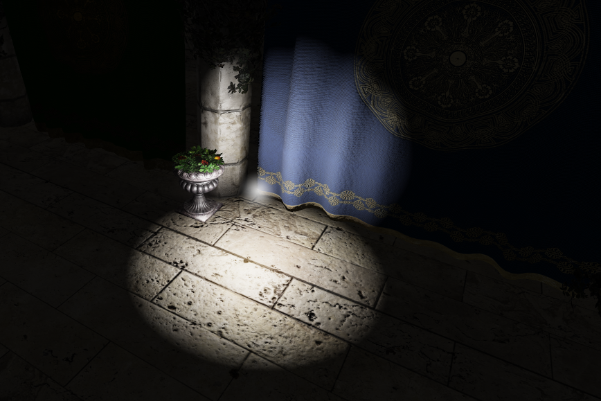
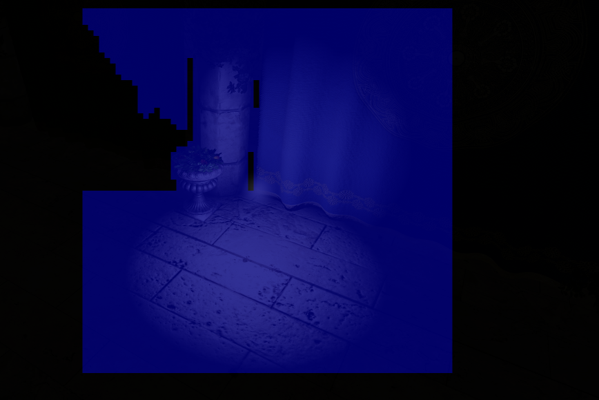
Blue pixels on the second picture visualize which tiles contain the sphere light source after the culling. But the results are strange, why is the blue area kind of sqare shaped, when it should be a circle instead? This results because the math used for sphere – frustum plane tests are not accurate enough when we test big spheres against small frustums. Let me try illustrating this problem. The following image shows a tile frustum as seen on the screen:
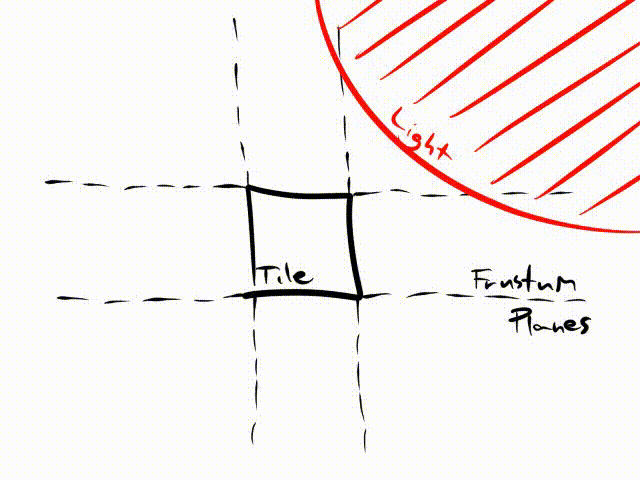
As you can see, the sphere is completely outside the frustum, but none of the plane tests pass completely, so the light is not culled away properly. We can overcome this, by using axis aligned boxes (AABBs) instead of frustums. It is implemented like this:
bool SphereIntersectsAABB(in Sphere sphere, in AABB aabb)
{
float3 vDelta = max(0, abs(aabb.center - sphere.center) - aabb.extents);
float fDistSq = dot(vDelta, vDelta);
return fDistSq <= sphere.radius * sphere.radius;
}The result:
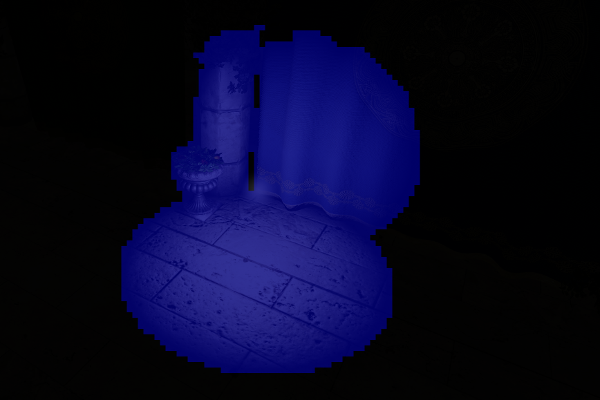
This one seems good enough, but don’t throw out frustum culling just yet!
2.) Depth discontinuities are enemy
Holes in the depth buffer can greatly reduce efficiency of a tile based light selection, because the tile enclosing min-max depth AABB can get huge really fast:
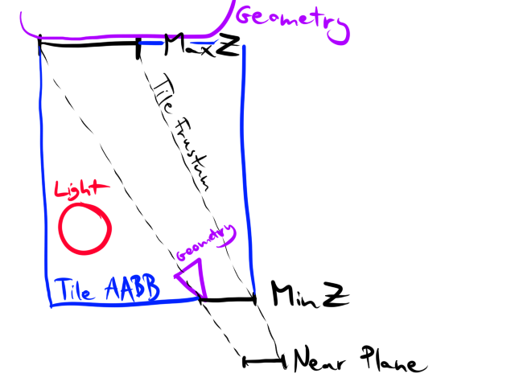
In the image above I tried to illustrate (from an above point of view) that a depth discontinuity made the AABB large enough to intersect with a light which the frustum culling would have rejected. This is why AABB should be used alongside frustum culling and complementing each other.
Depth discontinuities usually introduce an other inefficiency, because there might be cases when a light will lie in empty space, not intersecting with anything, but still inside the tile, so the shading will receive the light, but it will not contribute at all:
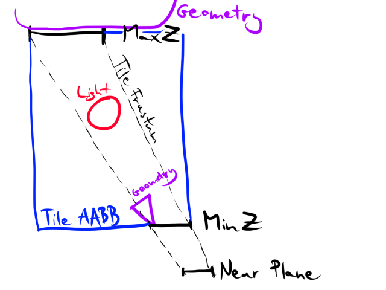
As you can see, that light is inside the frustum, inside the AABB, but it is in empty space, between geometries, but our current algorithm will add it to the light list.
To solve this, there is a technique called 2.5D light culling, introduced by Takahiro Harada. In addition to that presentation, I would like to give an implementation for this in HLSL. So the basic idea is to create two bitmasks, one for the tile and one for the light which we are checking. The bitmasks are used by doing a bitwise AND operation with them to determine if the light intersects any geometry (when AND returns non zero) in the tile or not (when AND returns zero).
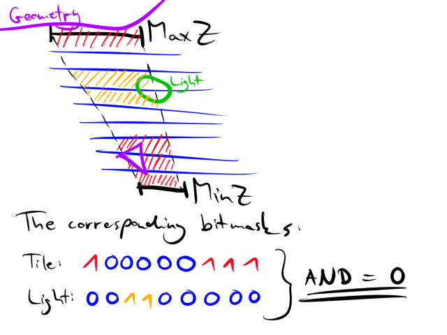
For the sake of a simpler image, I used a 9-bit mask, but we should use a 32-bit mask which we can represent by a uint variable.
The first bitmask is created for the whole tile once. While each thread reads its corresponding pixel from the depth buffer, it does an atomic min-max already, but now it also fills in a single relevant bit in a uint and performs an atomic OR to the tile bitmask. So what is the relevant bit? The algorithm says that we divide our tile depth range into 32 pieces and a 32-bit uint variable will contain those ranges. We first determine our tile depth bounds in linear space for this, then fill in the corresponding bit accordingly:
groupshared uint tileDepthMask = 0;
// ...
float minDepthVS = UnprojectScreenSpaceToViewSpace(float4(0, 0, minDepth, 1)).z;
float maxDepthVS = UnprojectScreenSpaceToViewSpace(float4(0, 0, maxDepth, 1)).z;
float realDepthVS = UnprojectScreenSpaceToViewSpace(float4(0, 0, pixelDepth, 1)).z;
float depthRangeRecip = 32.0f / (maxDepthVS - minDepthVS);
uint depthmaskcellindex = max(0, min(32, floor((realDepthVS - minDepthVS) * depthRangeRecip)));
InterlockedOr(tileDepthMask, 1 << depthmaskcellindex);
GroupMemoryBarrierWithGroupSync();This code is being run by every thread in the group. The unexplained function called UnprojectScreenSpaceToViewSpace just does what is says, the input is a screen coordinate point, and transforms it to view space. We are only interested in the Z coordinate here, so we only need to transform the input with the inverse projection matrix and divide the result by the w component afterwards. Otherwise if we would be interested in XY coordinates, we would also need to transform from [0,1] to [-1,1] range before projection. The function would look like this for the common case:
float4 UnprojectScreenSpaceToViewSpace(in float4 screenPoint)
{
float4 clipSpace = float4(float2(screenPoint.x, 1 - screenPoint.y) * 2 - 1, screenPoint.z, screenPoint.w);
float4 viewSpace = mul(clipSpace, xInverseProjectionMatrix);
viewSpace /= viewSpace.w;
return viewSpace;
}So the bitmask construction code might look a bit intimidating, so let me explain a bit better what’s happening. We calculate the minZ, maxZ and current pixel Z in view space and determine the depth slice size which a single bit will represent (depthRangeRecip). Then shift a bit to the right place and adding it to the group shared tile mask by means of an atomic OR operation.
The tile mask is complete, so we only need to know how to construct a light mask. That must be done inside the loop where we are culling lights. On the first try I cooked up this:
float fMin = lightPosViewSpace.z - lightRadius.r;
float fMax = lightPosViewSpace.z + lightRadius.r;
uint lightMaskcellindexSTART = max(0, min(32, floor((fMin - minDepthVS) * depthRangeRecip)));
uint lightMaskcellindexEND = max(0, min(32, floor((fMax - minDepthVS) * depthRangeRecip)));
uint lightMask = 0;
for (uint c = lightMaskcellindexSTART; c <= lightMaskcellindexEND; ++c)
{
lightMask |= 1 << c;
}Here we determine the beginning and end ranges of a sphere light inside the view space depth range and push bits into the mask in a loop to the correct places one-by one:
In this mask for example, lightMaskcellindexSTART is the 11th bit from the right, and lightMaskcellindexEND is the 21st bit from the right:
0000000000111111111110000000000
Of course this loop seems like a waste to do inside a shader, so I needed to come up with something better. Rethinking how this a smaller bitfield could be pushed inside a bigger bitrange gave me the idea to exploit the truncation by the bitwise shift operators:
- First, fill full mask like this:1111111111111111111111111111111
uint lightMask = 0xFFFFFFFF;
- Then Shift right with spare amount to keep mask only:0000000000000000000011111111111
- l
ightMask >>= 31 - (lightMaskcellindexEND - lightMaskcellindexSTART);
- l
- Last, shift left with START amount to correct mask position:0000000000111111111110000000000
- l
ightMask <<= lightMaskcellindexSTART;
- l
So the resulting code eliminated a loop for only a very few instructions which is a lot better.
We have the tile mask and the light mask, so the only thing left to do is AND them to determine if a light touches something or not:
bool intersect2_5D = tileMask & lightMask;And the resulting comparison of culling results in a high depth discontinuity scene with alpha tested vegetation and many point lights (red tiles have more that 50 lights):
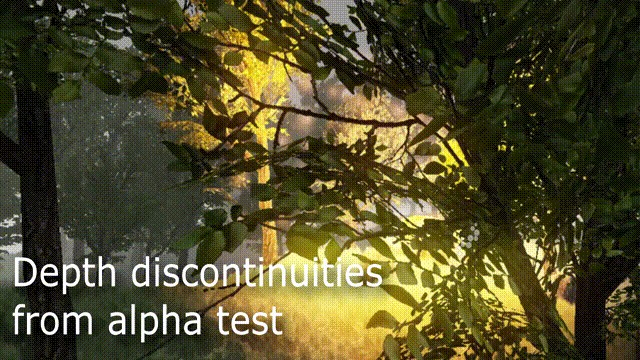
As you can see, there is a big improvement in the tile visualizer heatmap, the shading will process much less lights and performance will improve in these difficult cases with alpha tested geometry. The scene shown above had the following timing results (performed with DX11 timestamp queries):
- Basic 2D culling:
- Culling: 0.53 ms
- Shading: 10.72 ms
- Improved 2.5D culling:
- Culling: 0.64 ms
- Shading: 7.64 ms
As you can see this is a definite improvement because while the culling shader took a bit more time to finish (0.1 ms), the object shading took 3 ms less. I made a more detailed video some time ago:
3.) Other light types
We surely have the need to cull other light types than point lights. Spot lights come to mind at first thought, but there can be the desire to cull decal boxes or area-aligned local environment probe volumes as well.
- Spot lights:
- Implement a cone culling algorithm in shader code. This can be more expensive than sphere culling and again not too accurate with frustum tests. Then going further and implementing cone – AABB tests will further slow down our algorithm.
- Or approximate the spotlight cone with tightly fitting a sphere around it. We don’t need to implement any other culling algorithms, only fitting a sphere around the spotlight, which is a straight forward, easy calculation. But this will result in excessive waste for thin/long cones. Code to fit sphere around cone:
float spotLightConeHalfAngleCos = cos(spotLightFOV * 0.5f);float sphereRadius = spotlightRange * 0.5f / (spotLightConeHalfAngleCos *spotLightConeHalfAngleCos);float3 sphereCenter = spotLightPos + spotLightDirection * sphereRadius;- Remember that you can precalculate this outside the shader, so the shader will only have a sphere to evaluate.
- An other method involves doing cone-sphere test instead and can produce much more accurate results than the previous two, check it out here.
- Decal/Environment probe box:
- The idea here is to get away with AABB-AABB tests. But our decals or envprobes can be oriented in world space arbitrarily so they are OBBs! We can do something that I’d call a coarse AABB test. I transform the tile AABB from view space to world space (using the inverse view matrix of the camera) and recalculate the AABB of the resulting OBB. Then for each decal I transform the world space tile AABB by the decal’s inverse world matrix and perform an AABB-AABB intersection test with the resulting AABB and a unit AABB. The results are kind of good, but we have to refine again with the frustum as well. Transforming an AABB with a matrix is quite heavy though, because I am multiplying each corner with a matrix and keep track of the min-max at the same time. With two AABB transforms it gets heavy, but I have not yet found a better solution for this. And culling decals or envprobes is much less frequent than lights, so I comfort myself with that idea for the time being. The results:
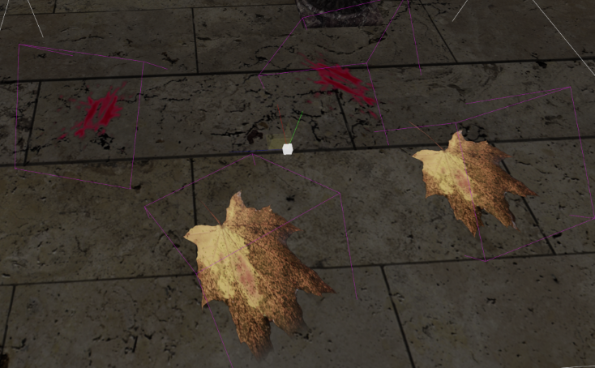
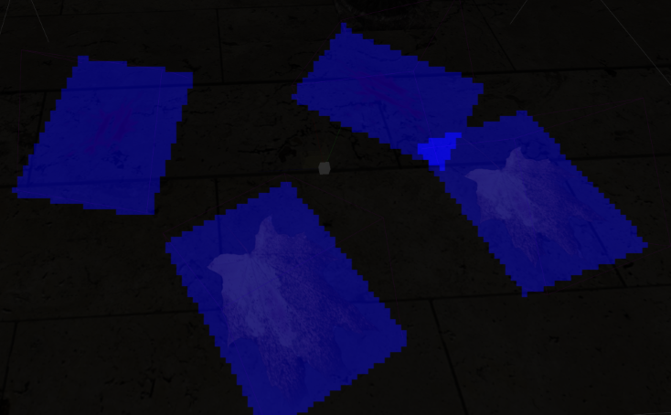
4.) Gather vs. Scatter approaches
The implementation described by the above mentioned Battlefield presentation deals with the gather approach, which means that each thread group iterates through every potential light. A culling shader like this works best for a couple hundred lights, but can become slow when approaching a few thousand. To support more lights, we can implement some kind of a scatter approach. My suggestion is to have a coarse culling step before the regular light culling which operates on much bigger screen tiles and dispatches the work differently. This shader is dispatched so that each thread will process a single light, and determine which tile it belongs to and write (scatter) the light index into the according tile. Then the regular culling would read the light lists from the coarse tiles as opposed to iterating through each light on the screen. We could also use an acceleration structure for the lights like an octree for example and let the shader use that instead of coarse culling.
A scatter approach could be implemented for a different purpose as well: refining culling results. I described above that we can approximate spotlights with spheres, but an other idea would be to rasterize a cone instead in low resolution and let the pixel shader write the light into the appropriate tile corresponding to the invoked pixel.
5.) Don’t be greedy
It might be tempting to create a single uber-shader handling everything, creating frustums, reading depth buffer and assembling depth bounds, creating tile AABB, creating tile bitmask, culling lights, and in the case of tiled deferred, also evaluating the shading at the end. In reality, though it could be the wrong path to take.
First, on AMD GCN architecture for example, resources such as registers are shared across hardware execution units and if a shader uses too many, there will be contention for them and parallel execution will be reduced so that overall performance will be bottlenecked. This is called register pressure. Our shader which is creating frustums at the beginning are already using many registers for example which could be precalculated instead to lighten the load. AABB calculation further reduces available registers and so does calculating the tile bitmask. A tiled deferred shader at the end of the culling shader can also be very complex and utilizing many registers at once.
Then there is the part when we are creating the depth bounds with atomic operations. Atomic operations can be slow, so calculating the depth bounds in a separate shader by means of parallel reduction could be a better alternative. A reduced resolution depth buffer can also be reused later as a hierarchical-Z pyramid for instance.
Divergent branching in a shader is only a good idea if we design the shader to be highly coherent in the branches it takes for a thread group. A light culling setup usually works best in 16×16 or 32×32 pixel tiles, and each thread gets a minor task of culling a single light. This task is highly divergent in the path each thread will take. A light evaluation shader has a different behaviour as opposed to that, because each thread will potentially process the same array of lights in its given tile. Except there could be cases when a light/decal calculation will exit early or skip shadow calculations, etc… with a pixel granularity instead of per tile granularity. In that case, it is already inefficient to utilize big thread groups because long iterating threads will hold back the rest in the group from exiting early and the hardware will be underutilized. So a smaller tile size for the light evaluation should be preferred (8×8 worked best in my experiments).
Seeing these problems I propose to separate the big shader into several smaller parts. Frustum precomputation could go into its own shader. An other shader could reduce the depth buffer and create the depth bounds with the tile bitmask information. Tile AABB computation could also go in there potentially. The culling shader would only load the depth bounds, tile AABB and bitmask from memory, then perform culling the lights, then export the per tile light lists into memory. The last shader is the surface shading, light evaluating shader, which is a vertex-pixel shader for Forward+ and a compute shader for tiled deferred with a smaller blocksize than the culling (8×8 proposed as in previous paragraph).
Separating the shaders opens up an other optimization possibility, to use Indirect Dispatch. Consider for example that the culling determined for a tile that no lights are inside it, so it would instruct the surface shading shader not to dispatch any work groups for that tile.
Recap:
A lot has been covered, so let’s recap quickly:
- Frustum-sphere tests are inaccurate
- Refine with AABB-sphere tests
- Work against depth discontinuities with 2.5D culling bitmasks
- Small burden on culling can be big win with shading
- Approximate complex light types with spheres and AABBs
- Avoid overworked ubershaders
- Prefer smaller shaders, better fitted to specific task at hand
Thanks for reading, hope you enjoyed it! If you have any feedback, please share with me. Were there any mistakes? Definetly share 🙂
Further reading:
Introduction to tiled deferred rendering
Tile based rendering advancements GDC 2015
RealTimeCollisionDetection.NET has most of the intersection code